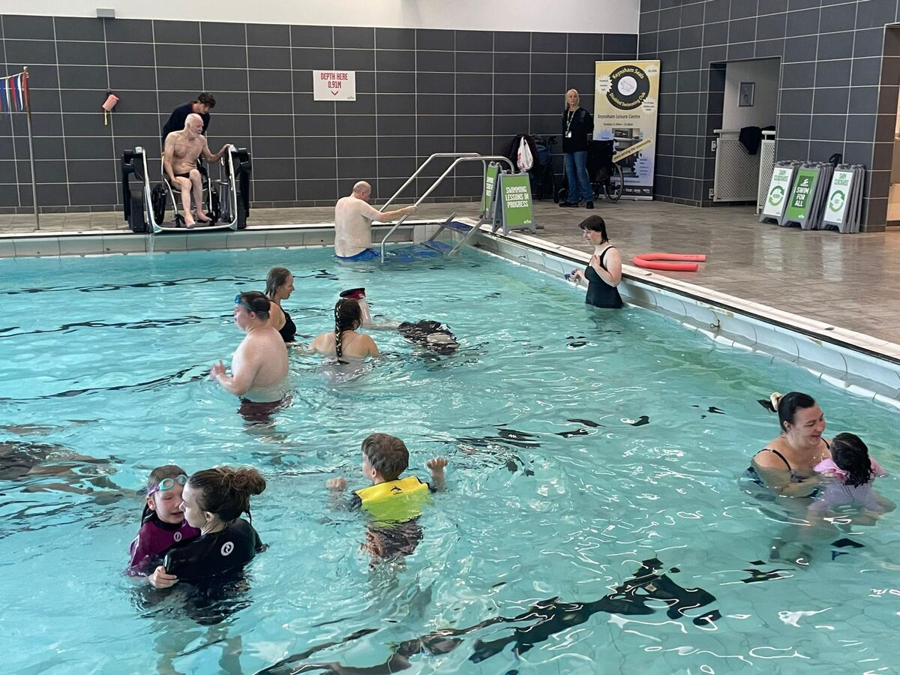
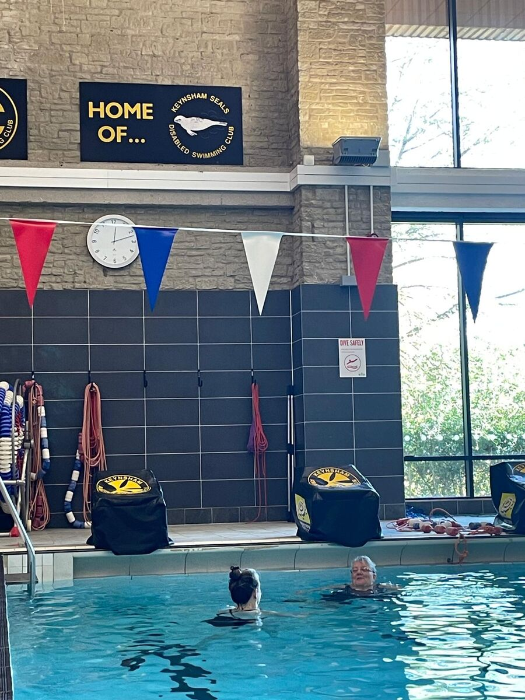
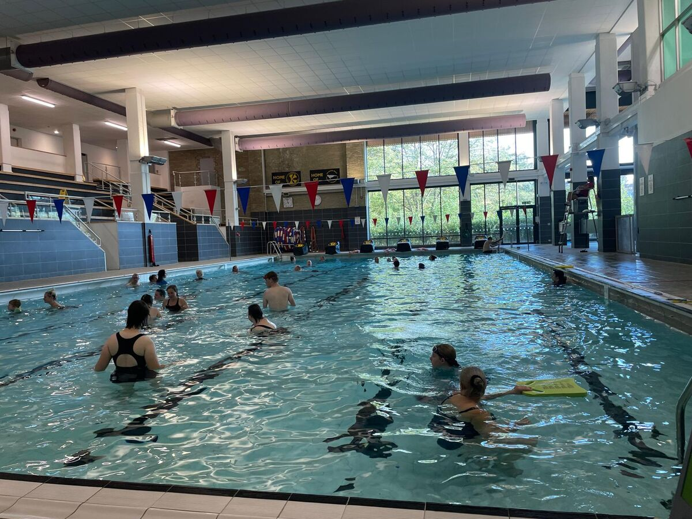
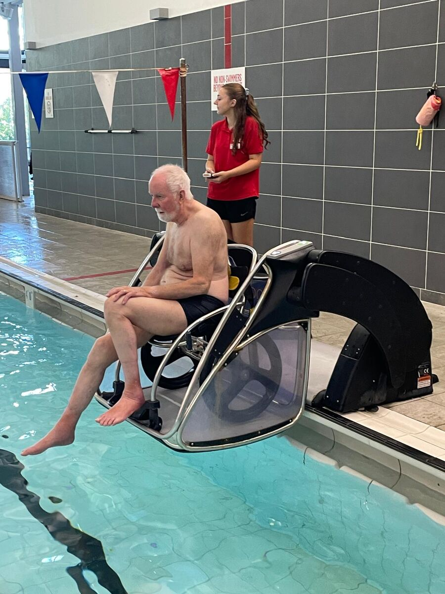
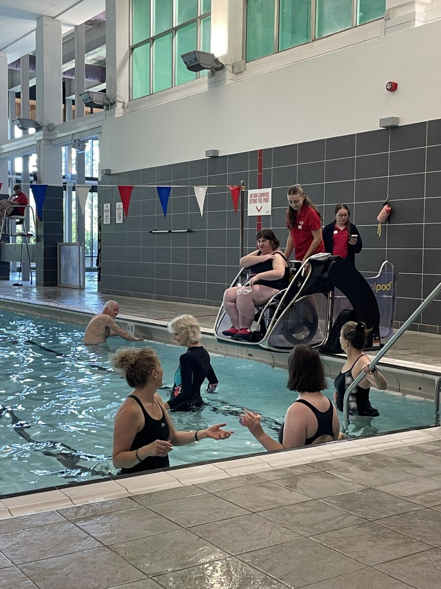
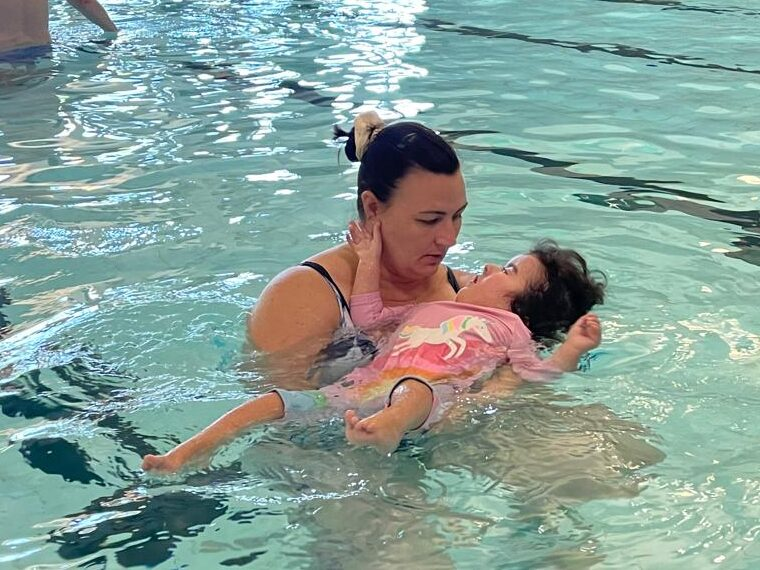

Swimming for everyone, every Sunday
We make swimming welcoming and comfortable for adults and children with disabilities, in Keynsham, since 1976. Your first taster session is free.
Come and swim with us Our 50 yearsWhen and where we swim
Every Sunday
11:30 to 12:30
Keynsham Leisure Centre
Temple Street, Keynsham, Somerset, BS31 1HENear Bristol, in the main pool
Keynsham Leisure Centre websiteJust for us
We hire the whole pool, so only club members and their carers are in the water.



Who we are
Keynsham Seals is a swimming club for adults and children with disabilities, of all ages. It was set up in 1976 so that they could learn to swim somewhere comfortable and welcoming, and it has been doing that ever since.
Keynsham Seals Disabled Swimming Club is a registered charity run by its member volunteers.
There is a lift down to the poolside, designated changing rooms and a hoist, as well as a motorised pool pod to lower members into the pool. We are a friendly and supportive club: families look out for each other, and new members are made to feel at home from their first Sunday.


What Seals means to our families
“It was a really difficult time. We’d already been to Seals for a year or two, and it was just a lifeline to come back every Sunday.”
“Seals has been a source not only of exercise but friendship, laughter and support.”
“Keynsham Seals has allowed us to make connections with other families and have found everyone who attends to be so understanding, accepting and welcoming.”
“I am a wheelchair user and joined the Seals after Covid. No other opportunities were available to me to go swimming. It is one of the few forms of exercise that I can still do. The sessions are great in that Seals have the dedicated use of the main pool, so it’s quieter. I really enjoy going on a Sunday. The Seals are a lovely inclusive family, and I am so glad I discovered them.”
“Keynsham Seals is a fantastic group that has offered real support to our family. It provides an inclusive, safe and relaxed environment helping everyone to feel comfortable, welcome and accepted. We all look forward to our Sunday morning swim and genuinely feel that Keynsham Seals has made a big difference to our life.”

Join us
We welcome new members of all ages to come along and join us, together with their carers.
Your first taster session is free. Please email us to book it and for more information.
Fees
- Individual disabled adults: £10 per month, with a carer included
- Families with a disabled member: £20 per month
- Annual membership: £10
Contact us
Please email us to book your free taster session or ask us anything.
- Contacts Lesley Gane, Treasurer
Rachel Parker, Chairperson - Email keynshamseals@outlook.com